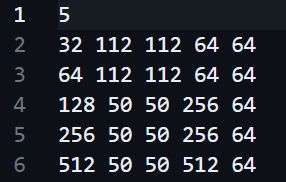

PAC
主要用于PAC比赛过程中学习的记录，会很不成体系，因为本来就是在疯狂补漏
VScode通过ssh连接集群
加载环境 source load.sh
winograd
这实在是一个痛苦的过程，像个无头苍蝇
我们要修改 winograd.c 文件sgemm 函数，这是一个单精度通用矩阵乘法。在原代码中已经简单用了 OpenMP 中的指令来并行化嵌套，但肉眼可见这应该是一个效率很低的函数
首先能想到的就是SIMD，也就是所谓的单指令多数据，也就是向量化
ARM 处理器上）或 SSE/AVX（在 x86 处理器上）
GPU,用CUDA编程
这里比赛给出的硬件参数是
所以尝试学习的是ARM SIMD指令集neonCSDN文档 b站视频 官方指令集文档
ARM-NEON-SIMD-COPROCESSOR
ARM-NEON单指令多数据协处理器
ARM平台下提供两种编程方式，一种是汇编语言（显然不会）；另一种是NEON intrinsics （C，类似函数调用），是底层汇编指令的封装，不需要用户考虑底层寄存器的分配（超出也可以自动分配）
新的 Armv8a 架构有 32 个 128bit 向量寄存器，老的 ArmV7a架构有 32个 64bit(可当作 16 个128bit)向量寄存器，被用来存放向量数据，每个向量元素的类型必须相同，根据处理元素的大小可以划分为 2/4/8/16 个通道
NEON 数据类型和指令类型
NEON数据类型
向量数据类型命名规则
# 比如 int8x16_t 是一个16通道的向量，每个通道包含一个有符号8位整数
D寄存器一次能够处理8个u8数据，Q处理器一次能够处理16个u8数据
NEON指令类型
NEON指令的函数名格式
# v:vector
# mod有以下几种
# q:饱和计算，h:折半计算，d:加倍计算，r:舍入计算，p：pairwise计算，具体见CSDN文档，一般就用饱和计算
# opname:operation name
# shape有一下几种
# l:long，输出向量元素长度是输入的两倍
# w:wide，第一个输入向量和输出向量类型一样，且是第二个输入向量元素长度的两倍
# n:narrow，输出向量的元素长度是输入向量的1/2
# _n:有标量参与向量计算
# _lane:指定向量中某个通道参与向量计算
NEON指令介绍
一个NEON的指令执行以下流程
sgemm
NEON的基础内容十分冗长，而我要做的就是用NEON实现SIMD，所以我决定直接上手
优化SGEMM的方法参考如何加速矩阵乘法 、通用矩阵乘法（GEMM）优化——基于arm neon
使用到的命令可以在Arm-neon-intrinsics Public 中简单快速查找
让我们开始
SGEMM最原始的代码差不多是这样
void sgemm ( const float * A , const float * B , float * out , const int M , const int K , const int N ) {
for ( int i = 0 ; i < M * N ; ++ i ) {
out [ i ] = 0.0f ;
}
for ( int i = 0 ; i < M ; ++ i )
for ( int j = 0 ; j < N ; ++ j )
for ( int k = 0 ; k < K ; ++ k )
out [ i * N + j ] += A [ i * K + k ] * B [ k * N + j ];
}
跳过编译器优化，我们从利用neon intrinsic开始
在ARM-v8中有32个128位定长寄存器，每个寄存器可以存4个单精度浮点数，支持SIMD向量化操作。利用这一特性，我们可以四个四个地计算矩阵out中的元素。
这里属实给我整的够呛，CSDN中虽然给了代码，但是列主序的，我是理解之后写的行主序
void sgemm_parallel ( const float * A , const float * B , float * out , const int M , const int K , const int N ) {
//#pragma omp parallel for collapse(2)
int i , j ;
for ( i = 0 ; i < M ; ++ i ){
for ( j = 0 ; j < (( N ) & ( ~ 3 )); j += 4 ){ //我采用横向同时计算out中的四个值，N有可能不是4的整数倍
float32x4_t c = vmovq_n_f32 ( 0.0f ); //从out中横向连续取出四个位置
for ( int k = 0 ; k < K ; ++ k ){
float a = A [ i * K + k ]; //对于A就是对第i行一个个取，一共k个
float32x4_t b = vld1q_f32 ( & B [ k * N + j ]); //对于B就是纵向一个个取，同时取4列，一共k个
c = vmlaq_n_f32 ( c , b , a ); //做乘法
}
vst1q_f32 ( & out [ i * N + j ], c ); //把寄存器中数据加载回内存
}
for (; j < N ; ++ j ){ //处理剩余的边界
register float temp = 0.0f ;
for ( int k = 0 ; k < K ; ++ k ){
temp += A [ i * K + k ] * B [ k * N + j ];
}
out [ i * N + j ] = temp ;
}
}
}
在这个版本中，每个内循环是A中1\(\times\) K的子矩阵乘以B中k\(\times\) 4的子矩阵。显然A中元素的利用效率是很低的。我们也可以同时load A中相邻的4行元素，让内循环变成A中4\(\times\) k的子矩阵乘以B中k\(\times\) 4的子矩阵。
void sgemm_parallel ( const float * A , const float * B , float * out , const int M , const int K , const int N ) {
int i , j , k ;
for ( i = 0 ; i < (( M ) & ( ~ 3 )); i += 4 ){
for ( j = 0 ; j < (( N ) & ( ~ 3 )); j += 4 ){
float * a_ptr_0 , * a_ptr_1 , * a_ptr_2 , * a_ptr_3 ;
a_ptr_0 =& A [ i * K + 0 ];
a_ptr_1 =& A [( i + 1 ) * K + 0 ];
a_ptr_2 =& A [( i + 2 ) * K + 0 ];
a_ptr_3 =& A [( i + 3 ) * K + 0 ];
float32x4_t c_sum_0 = { 0 };
float32x4_t c_sum_1 = { 0 };
float32x4_t c_sum_2 = { 0 };
float32x4_t c_sum_3 = { 0 };
float a_reg_0 , a_reg_1 , a_reg_2 , a_reg_3 ;
for ( int k = 0 ; k < K ; k ++ ){
float32x4_t b_reg = vld1q_f32 ( & B [ k * N + j ]);
a_reg_0 = * ( a_ptr_0 ++ );
a_reg_1 = * ( a_ptr_1 ++ );
a_reg_2 = * ( a_ptr_2 ++ );
a_reg_3 = * ( a_ptr_3 ++ );
c_sum_0 = vmlaq_n_f32 ( c_sum_0 , b_reg , a_reg_0 );
c_sum_1 = vmlaq_n_f32 ( c_sum_1 , b_reg , a_reg_1 );
c_sum_2 = vmlaq_n_f32 ( c_sum_2 , b_reg , a_reg_2 );
c_sum_3 = vmlaq_n_f32 ( c_sum_3 , b_reg , a_reg_3 );
}
vst1q_f32 ( & out [ i * N + j ], c_sum_0 );
vst1q_f32 ( & out [( i + 1 ) * N + j ], c_sum_1 );
vst1q_f32 ( & out [( i + 2 ) * N + j ], c_sum_2 );
vst1q_f32 ( & out [( i + 3 ) * N + j ], c_sum_3 );
}
}
for (; j < N ; j ++ ){
float c_0 = 0.0f , c_1 = 0.0f , c_2 = 0.0f , c_3 = 0.0f ;
for ( int k = 0 ; k < K ; k ++ ){
c_0 += A [ i * K + k ] * B [ k * N + j ];
c_1 += A [( i + 1 ) * K + k ] * B [ k * N + j ];
c_3 += A [( i + 2 ) * K + k ] * B [ k * N + j ];
}
out [ i * N + j ] = c_0 ;
out [( i + 1 ) * N + j ] = c_1 ;
out [( i + 2 ) * N + j ] = c_2 ;
out [( i + 3 ) * N + j ] = c_3 ;
}
for (; i < M ; ++ i ){
for ( j = 0 ; j < (( N ) & ( ~ 3 )); j += 4 ){ //我采用横向同时计算out中的四个值，N有可能不是4的整数倍
float32x4_t c = vmovq_n_f32 ( 0.0f ); //从out中横向连续取出四个位置
for ( int k = 0 ; k < K ; ++ k ){
float a = A [ i * K + k ]; //对于A就是对第i行一个个取，一共k个
float32x4_t b = vld1q_f32 ( & B [ k * N + j ]); //对于B就是纵向一个个取，同时取4列，一共k个
c = vmlaq_n_f32 ( c , b , a ); //做乘法
}
vst1q_f32 ( & out [ i * N + j ], c ); //把寄存器中数据加载回内存
}
for (; j < N ; ++ j ){ //处理剩余的边界
register float temp = 0.0f ;
for ( int k = 0 ; k < K ; ++ k ){
temp += A [ i * K + k ] * B [ k * N + j ];
}
out [ i * N + j ] = temp ;
}
}
}
\(\times\) 4的矩阵去做
值的一提的是，在测试数据中，4\(\times\) 4的版本比1\(\times\) 4的版本能够体现出优越性
测试用例：

测试结果（在winograd算法中）：
理论上接下还可以把4\(\times\) 4拓展到8\(\times\) 8，但这对于规模大的矩阵提升并不明显。而且规模越大对效率的降低越显著，这是因为对于out中同行不同列的子矩阵做计算的时候，A中4\(\times\) k的blocks要被多次加载，而A中的blocks每次取出的元素在内存上是不连续的，每次加载都会造成一定的cache miss
为此，我们可以尝试做packing ，把A中4\(\times\) k的blocks给packing至某片连续的区域，这样下次访问的时候就是连续内存了，理论上可以减少cache miss的概率
pakcing后的代码
void sgemm_parallel ( const float * A , const float * B , float * out , const int M , const int K , const int N ) {
int i , j , k ;
for ( i = 0 ; i < (( M ) & ( ~ 3 )); i += 4 ){
for ( j = 0 ; j < (( N ) & ( ~ 3 )); j += 4 ){
float * a_ptr_0 , * a_ptr_1 , * a_ptr_2 , * a_ptr_3 ;
/*a_ptr_0=&A[i*K+0];
a_ptr_1=&A[(i+1)*K+0];
a_ptr_2=&A[(i+2)*K+0];
a_ptr_3=&A[(i+3)*K+0];*/ //可以packing
float packedA [ K * 4 ] = { 0.0f };
flaot * packedA_ptr = packedA ;
if ( j == 0 ){
for ( int k = 0 ; k < K ; k ++ ){ //相当于将原来4*K的block转置成了K*4的block
* ( packedA_ptr ++ ) = A [ i * K + 0 ];
* ( packedA_ptr ++ ) = A [( i + 1 ) * K + 0 ];
* ( packedA_ptr ++ ) = A [( i + 2 ) * K + 0 ];
* ( packedA_ptr ++ ) = A [( i + 3 ) * K + 0 ];
}
}
/*float32x4_t c_sum_0={0};
float32x4_t c_sum_1={0};
float32x4_t c_sum_2={0};
float32x4_t c_sum_3={0};*/
float32x4_t c_sum = { 0.0f };
//float a_reg_0,a_reg_1,a_reg_2,a_reg_3;
for ( int k = 0 ; k < K ; k ++ ){
float32x4_t b_reg = vld1q_f32 ( & B [ k * N + j ]);
/*a_reg_0 = *(a_ptr_0++);
a_reg_1 = *(a_ptr_1++);
a_reg_2 = *(a_ptr_2++);
a_reg_3 = *(a_ptr_3++);*/
float32x4_t a_reg = vld1q_f32 ( & packedA [ k * 4 + 0 ]); //这样之后再取就可以用vld1q四个四个直接取
/*c_sum_0=vmlaq_n_f32(c_sum_0,b_reg,a_reg_0);
c_sum_1=vmlaq_n_f32(c_sum_1,b_reg,a_reg_1);
c_sum_2=vmlaq_n_f32(c_sum_2,b_reg,a_reg_2);
c_sum_3=vmlaq_n_f32(c_sum_3,b_reg,a_reg_3);*/
c_sum = vmul_f32 ( c_sum , a_reg , b_reg ); //后面的运算也不用逐位计算了
}
/*vst1q_f32(&out[i*N+j],c_sum_0);
vst1q_f32(&out[(i+1)*N+j],c_sum_1);
vst1q_f32(&out[(i+2)*N+j],c_sum_2);
vst1q_f32(&out[(i+3)*N+j],c_sum_3);*/
vst1q_f32 ( & out [ i * N + j ], c_sum );
}
}
for (; j < N ; j ++ ){
float c_0 = 0.0f , c_1 = 0.0f , c_2 = 0.0f , c_3 = 0.0f ;
for ( int k = 0 ; k < K ; k ++ ){
c_0 += A [ i * K + k ] * B [ k * N + j ];
c_1 += A [( i + 1 ) * K + k ] * B [ k * N + j ];
c_3 += A [( i + 2 ) * K + k ] * B [ k * N + j ];
}
out [ i * N + j ] = c_0 ;
out [( i + 1 ) * N + j ] = c_1 ;
out [( i + 2 ) * N + j ] = c_2 ;
out [( i + 3 ) * N + j ] = c_3 ;
}
for (; i < M ; ++ i ){
for ( j = 0 ; j < (( N ) & ( ~ 3 )); j += 4 ){ //我采用横向同时计算out中的四个值，N有可能不是4的整数倍
float32x4_t c = vmovq_n_f32 ( 0.0f ); //从out中横向连续取出四个位置
for ( int k = 0 ; k < K ; ++ k ){
float a = A [ i * K + k ]; //对于A就是对第i行一个个取，一共k个
float32x4_t b = vld1q_f32 ( & B [ k * N + j ]); //对于B就是纵向一个个取，同时取4列，一共k个
c = vmlaq_n_f32 ( c , b , a ); //做乘法
}
vst1q_f32 ( & out [ i * N + j ], c ); //把寄存器中数据加载回内存
}
for (; j < N ; ++ j ){ //处理剩余的边界
register float temp = 0.0f ;
for ( int k = 0 ; k < K ; ++ k ){
temp += A [ i * K + k ] * B [ k * N + j ];
}
out [ i * N + j ] = temp ;
}
}
}
packing后的代码在小规模的矩阵上没有优势，需要额外花packing的开销，但在大规模矩阵上有明显优势，对矩阵规模的敏感度下降。用上面的测试用例测试，速度快于1\(\times\) 4子矩阵的版本，慢于4\(\times\) 4子矩阵的版本。
理论上还可以进行blocking 优化，但对性能的提升有限，所以sgemm的优化就暂告段落。
CPUbench
手册其实把这个东西讲得很清楚了，这里边看边摘出一点来